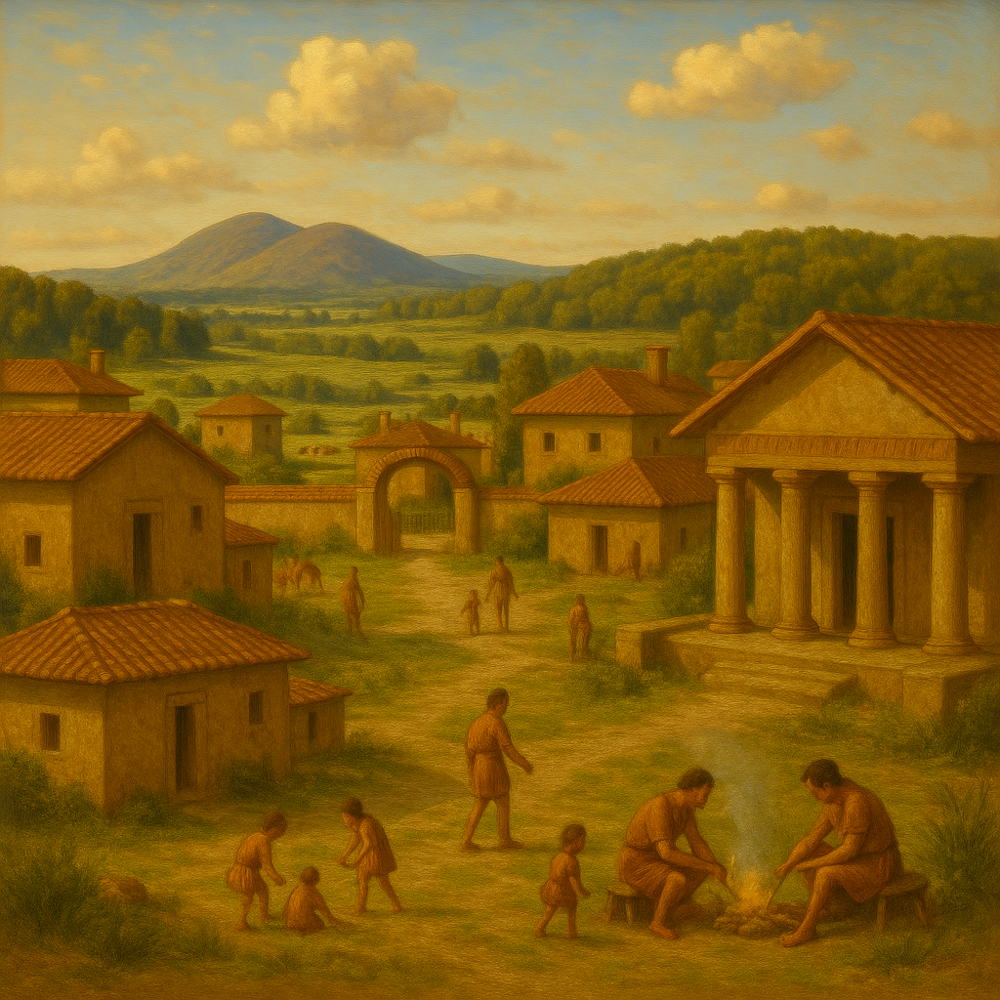

Storia di Sarteano: dal Neolitico all’epoca romana

1. Il Neolitico e le prime frequentazioni umane (6000–3000 a.C.)
Le testimonianze archeologiche più antiche di Sarteano risalgono al Neolitico, periodo in cui l’uomo passò da uno stile di vita nomade a uno stanziale, praticando agricoltura, allevamento e ceramica. Nelle aree collinari intorno al paese, soprattutto nella zona del Monte Cetona e della montagna di Sarteano, sono stati trovati strumenti in selce e ossidiana, punte di freccia, raschiatoi e cocci ceramici.
L'area era abitata o frequentata da piccole comunità sedentarie che vivevano in capanne e si stabilivano vicino a corsi d’acqua e risorse naturali, come le grotte del Monte Cetona. Alcune di queste grotte venivano anche usate come sepolture collettive.
2. L’Eneolitico e l’Età del Bronzo (3000–1000 a.C.)
Durante l’Eneolitico (o Età del Rame), i gruppi umani iniziarono a utilizzare il rame insieme alla pietra per fabbricare utensili. Le scoperte archeologiche nel territorio circostante Sarteano (specialmente verso il Monte Cetona e la Val d'Orcia) mostrano la presenza di tombe a grotticella, ceramiche decorate e oggetti in metallo.
Con l’Età del Bronzo, intorno al II millennio a.C., si sviluppano insediamenti più stabili su alture strategiche, come quella dove oggi sorge il Castello di Sarteano. Si ipotizza che l’altura fosse già un luogo fortificato o sacro, data la sua posizione dominante. Durante questo periodo si affermano anche riti funerari complessi con tombe a inumazione e a incinerazione.
3. L’Età del Ferro e l’avvento degli Etruschi (IX–VI secolo a.C.)
Sarteano diventa parte del mondo protovillanoviano prima e etrusco poi. Questo è il periodo più celebre e documentato della storia antica del paese.
La zona di Sarteano è celebre per la necropoli delle Pianacce, uno dei complessi funerari etruschi più significativi della Toscana interna, risalente al VI–V secolo a.C.. Le tombe scavate nella roccia, spesso a pianta rettangolare o a camera, testimoniano l’esistenza di una società gerarchizzata.
La Tomba della Quadriga Infernale, scoperta nel 2003, è uno degli esempi più straordinari di arte etrusca arcaica. Le pitture parietali mostrano una quadriga trainata da leoni e pantere, guidata da un demone con volto rosso fiammeggiante: un’immagine unica nella cultura etrusca, forse legata a credenze sull’aldilà influenzate da ambienti orientali o italici.
Oltre alle necropoli, si suppone l’esistenza di un abitato etrusco nell’area del castello attuale o poco distante, anche se ancora in parte inesplorato. Gli Etruschi di Sarteano erano artigiani, agricoltori e commercianti, legati alle vicine città-stato come Chiusi (Clevsi), con cui Sarteano mantenne stretti rapporti.
4. Il periodo romano (III sec. a.C. – V sec. d.C.)

Con la progressiva conquista romana della Toscana (III sec. a.C.), anche Sarteano entrò nell’orbita di Roma. Non fu una romanizzazione brutale, ma un assorbimento culturale e amministrativo, che integrò la popolazione etrusca nei modelli romani.
Il territorio di Sarteano era attraversato da strade secondarie che collegavano la Via Cassia con gli insediamenti della Val di Chiana. I Romani valorizzarono i percorsi collinari per motivi militari e commerciali.
Nel periodo imperiale, il paesaggio fu trasformato dalla centuriazione agraria: lotti di terra assegnati ai veterani o alle famiglie romane. Sono stati trovati resti di ville rustiche e insediamenti agricoli nei dintorni, dove si praticava la viticoltura, cerealicoltura e allevamento.
Le ville romane erano spesso dotate di impianti termali e strutture complesse, e alcune delle costruzioni rurali furono probabilmente riutilizzate nei secoli successivi.
Con la crisi del III–V secolo d.C., molte ville vennero abbandonate o trasformate in piccoli villaggi fortificati. La presenza di luoghi di culto paleocristiani e sepolture tardoantiche in zona indica l’avvento del cristianesimo rurale, che preparerà il terreno all’epoca altomedievale.